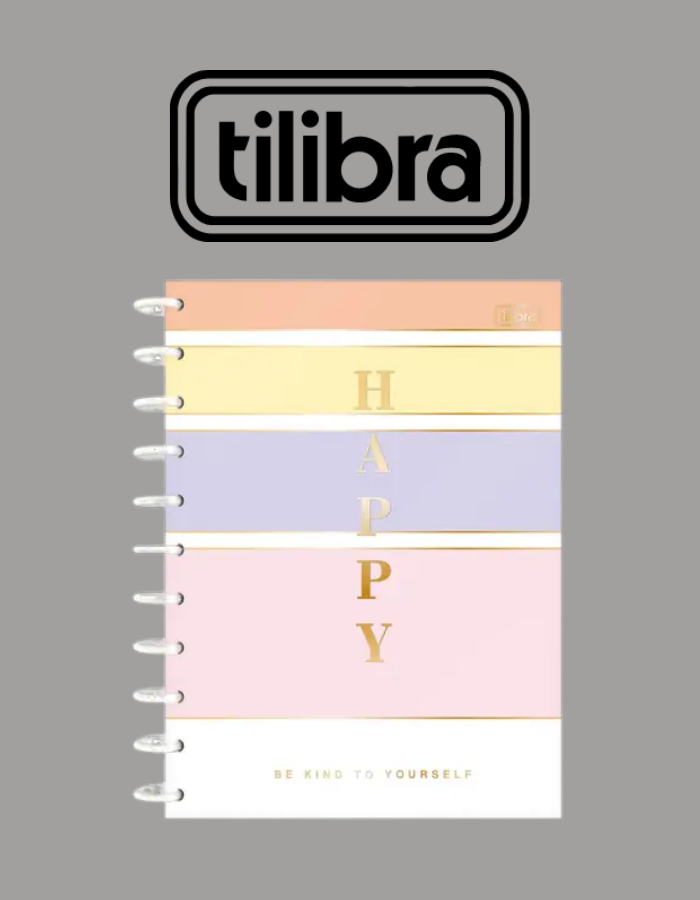
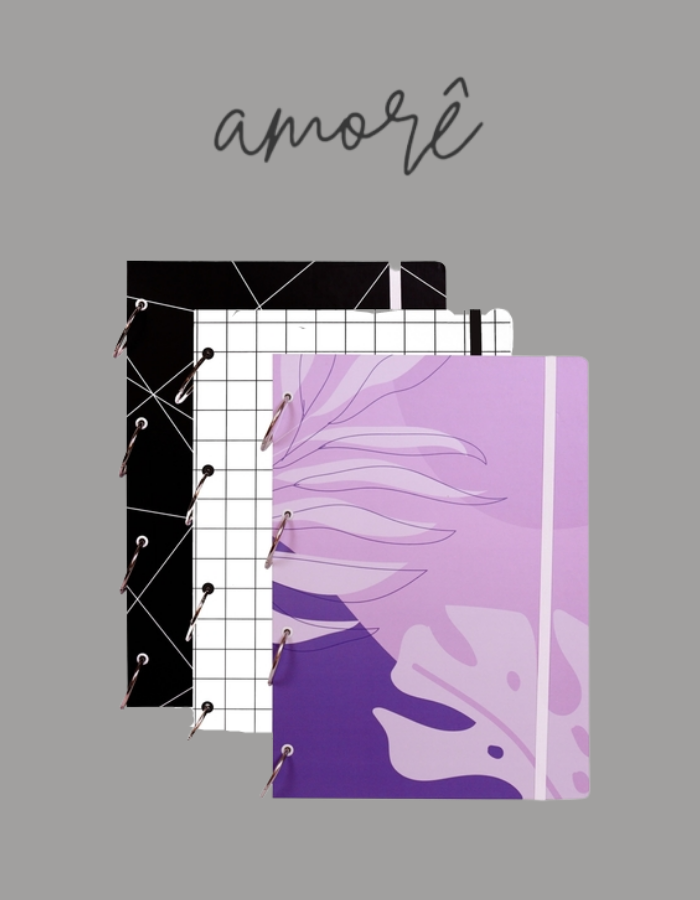
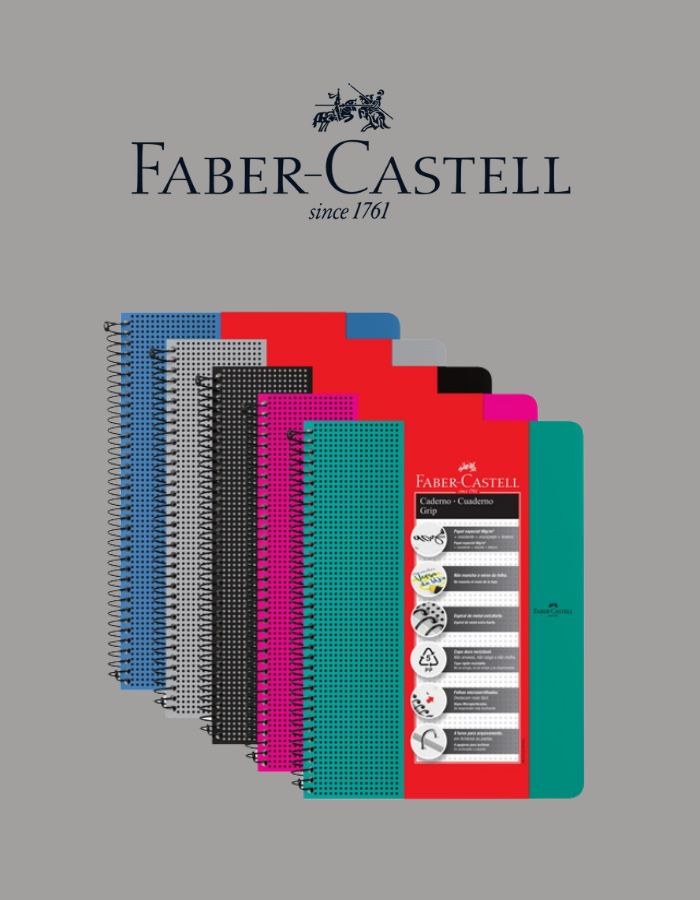
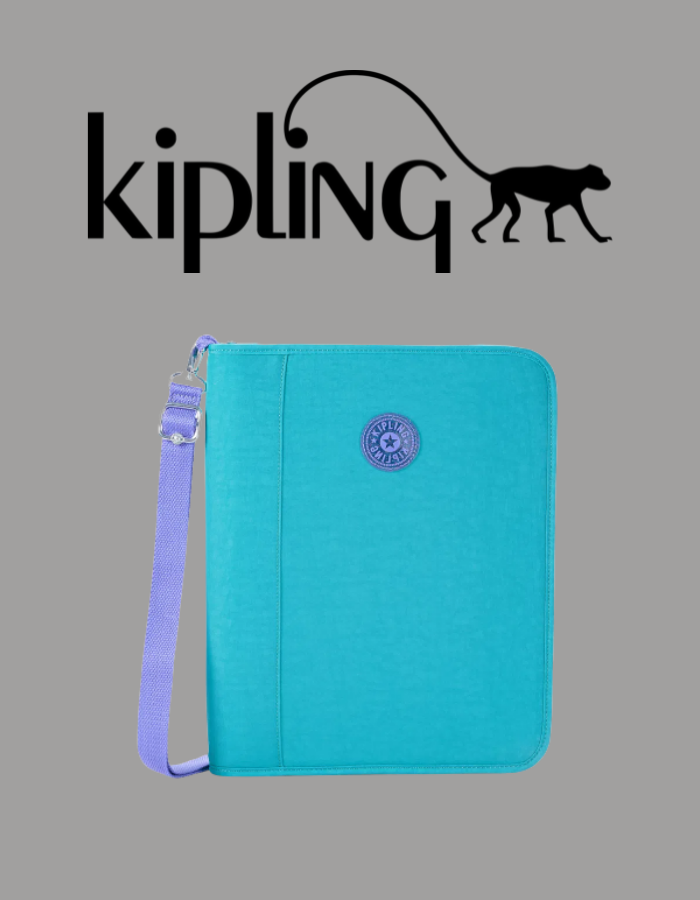
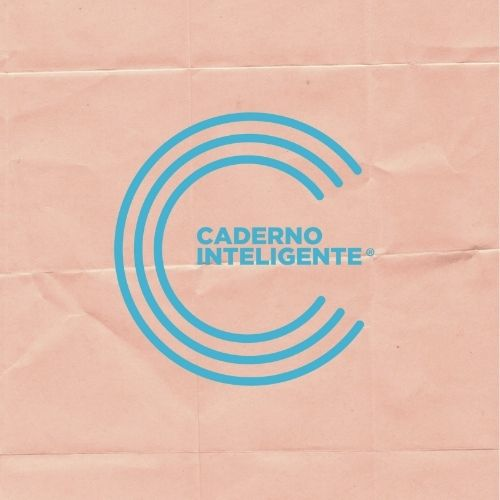
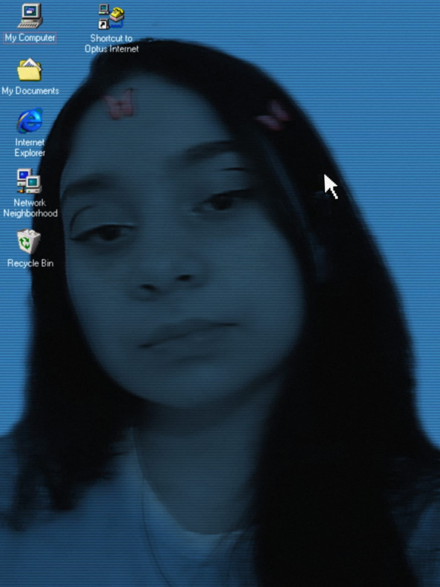

<!DOCTYPE html>
<html>
<head>
	<meta charset="utf-8">
	<meta name="viewport" content="width=device-width, initial-scale=1">
	<title>produtos</title>

	<link rel="stylesheet" type="text/css" href="css/estilo.css"> 

</head>
<body>

</body>
</html>

<!--começo-->

	<div id="principal">
		<div id="cabecalho">
			<div id="logotipo">				
				
				

				<div id="titulo">O mais prático, criativo e sustentável

			</div></div><!--divs logotipo e titulo-->

	<div id="abas">
	<a href="index.html"> Produtos </a>
   	<a href="lancamentos.html"> Lançamentos </a>
   	<a href="promocoes.html"> Promoções </a>
   	<a href="quemsomos.html"> Quem somos </a>
   	<a href="trabalheconosco.html"> Trabalhe conosco </a>
   	<a href="dados.html"> Dados </a>

 
	</div></div><!--divs cabecalho e abas-->

	<!--fechamento do elemento padrão-->

	<br>
	<div id="apresentação">

		<H2>Concorrentes</H2>

		<table>
			<tr>
				<td><H1>CADERNO UNIVERSITÁRIO<br>TILIDISCO HAPPY<BR><span id="cor-preco">R$90,00</span></H1></td>
				<td><H1>CADERNO ARGLADO A4 <br> 90 g/m²<BR><span id="cor-preco">R$76,90</span></H1></td> </td>
				<td><H1>CADERNO FABER CASTELL <br>GRIP PAUTADO<BR><span id="cor-preco">R$27,90</span></H1></td>
				<td><H1>FICHÁRIO KIPLING NEW <br>STORER<BR><span id="cor-preco">R$499,90</span></H1></td>
			</tr>
		</table>

		<h2>Análise SWOT (fofa)</h2>

<center>
		<table border="1px" style="background-color: #A1A09F; text-align: center;">
			<th style="background-color: #A66A6A; color: white;">
				<p style="background-color: #A66A6A; color: white; text-align: center;">Força</p>
				<td style="background-color: #A66A6A; color: white;"><b>Oportunidades</b></td>
				<td style="background-color: #A66A6A; color: white;"><b>Fraquezas</b></td>
				<td style="background-color: #A66A6A; color: white;"><b>Ameaças</b></td>
			</th>

			<tr style="padding: 5px;">
				<td>Produtos de alta qualidade</td>
				<td>Grande presença nas redes sociais</td>
				<td>Pouco acessível</td>
				<td>Mercado com muitos produtos</td>
			</tr>

			<tr style="padding: 5px;">
				<td>Estratégia de marketing fácil</td>
				<td>Tem muito destaque em época escolar</td>
				<td>Muitos concorrentes</td>
				<td>Marketing superior de outras marcas</td>
			</tr>

			<t style="padding: 5px;"r>
				<td>Diferencial no mercado</td>
				<td>Muitas opções de novos produtos</td>
				<td>Poucos lançamentos </td>
				<td>Poucas vendas entre o 2º semestre</td>
			</tr>

		</table>
</center>

	<table>
		<tr>
			<td><h2>Conclusão</h2></td>
		</tr>
		<tr>
			<td></td>

			<td style="padding: 5px;"><p>A caderno inteligente é uma empresa brasileira relativamente nova no mercado, que busca trazer itens cada vez mais criativos e revolucionários, como é o caso do seu novo lançamento: O caderno mais que inteligente. Com um nível superior de tecnologia já antes desenvolvido, conta com diversas funções e opções para o usuário. </p>

			<p>Tem muitas concorrentes, vendo que o mercado de papelaria cresce a cada dia com novos produtos e marcas, as principais são: Tilibra, Amorê, Faber Castell e Kipling, com produtos muito parecidos, mas não com a mesma excelência. E falando em excelência, essa empresa conta com um time gigantesco, com funcionários capacitados e que sempre pensam na satisfação do cliente como prioridade. </p>

			<p>O maior público alvo da empresa são estudantes e pessoas que precisam organizar multitarefas ao mesmo tempo que querem algo criativo e ágil. </p>

			<p>Atualmente a Caderno inteligente atende pelo site, redes sociais e loja física, disponibilizando uma entrega rápida e segura. </p></td>

		</tr>
	</table>

<table>
		<tr>
		<td><p><h2>Agradecimentos</h2></p>
		
		<p>Sou a Tayna, a desenvolvedora desse site e desse TCC e gostaria de primeiramente agradecer a Deus e aos meus amigos que me deram ideias do que eu poderia fazer para melhorar esse trabalho. Quero tambem agradecer ao time de professores da Start (já que passei por quase todos nesse meio tempo), são pessoas incríveis que sempre tentam ajudar os alunos dentro das suas possibilidades. Além disso, gostaria de fazer um agradecimento especial a Professora Leticia, que tive poucas aulas mas em pouco tempo demonstrou ser uma menina gentil, meiga, engraçada e inteligente S2.</p></td>

		<td></td>
		</tr>
	</table>


</div>
<br>
		<!--linha final-->
<div id="final">

	<table style="padding: 50px;">
		<tr>
			<td>Fale conosco:<br>
				Telefone: 55 11 3565-0360 | 55 11 2157-8472<br>
				Email: contato@cadernointeligente.com.br<br>
			    Endereço: Ipiranga, São Paulo - SP, 04204-000</td>

			<td></td>
			<td><a href="https://www.facebook.com/cadernointeligente"><button></button></a>
				<a href="https://www.instagram.com/ocadernointeligente/"><button></button></a>

		</tr>
	</table>

</div>

</div><!--div principal-->
</body>
</html>